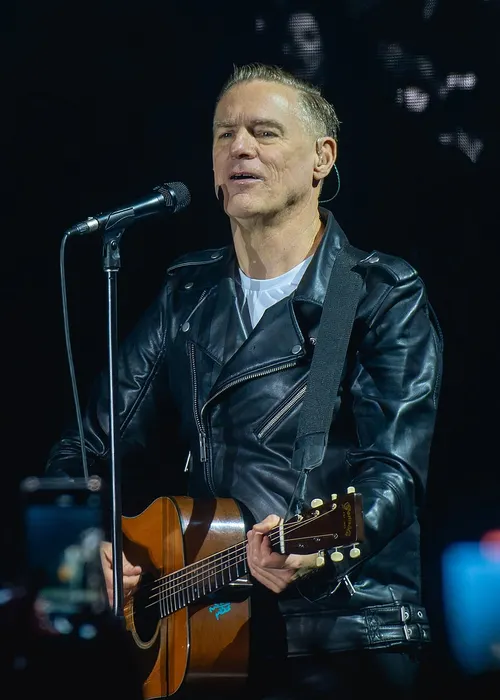
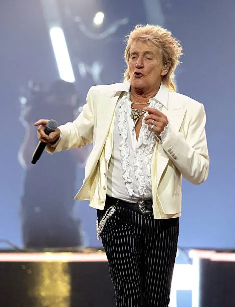

STOCKHOLM
Teddy Swims
4 mars 2027 · Avicii Arena
LIVE MUSIC IN SWEDEN
Din guide till livemusik i hela Sverige. Upptäck nästa stora konsertupplevelse!
4 mars 2027 · Avicii Arena
22 maj 2027 · Avicii Arena
19 oktober 2026 · Scandinavium

2 maj 2027 · Göteborg
30 april 2027 · Malmö Arena

11 juni 2027 · Dalhalla
Inga konserter visas för den valda staden ännu.